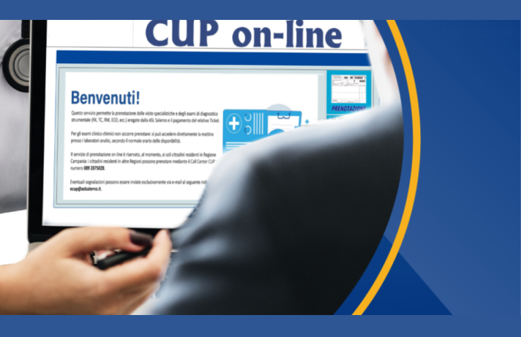

#CONSIGLI👥
⬆️📌 Dal 20 GENNAIO è operativo il nuovo Cup regionale, che consente di prenotare on-line, 24 ore su 24, le prestazioni di specialistica ambulatoriale nelle quattro Asl abruzzesi. La prenotazione è riservata ai possessori di identità digitale (SPID).
🔷 Sono disponibili on-line anche altri comodi servizi, come la scelta e le revoca del medico e del pediatra, la stampa del tesserino sanitario, le deleghe per i minori o non autosufficienti, e la ricerca di ambulatori medici e pediatrici". Nei prossimi mesi, secondo il progetto, verrà ampliata l'offerta estendendo la digitalizzazione ad altri servizi specifici.
🔷 Tutto questo grazie al progetto ABRUZZO SANITA’ ON-LINE, essa è la nuova piattaforma che consentirà a tutti i cittadini di accedere a funzioni digitali e sostituire così le funzioni classiche di "sportello". Questo permetterà di snellire le procedure, risparmiare tempo e ridurre gli accessi in presenza nelle strutture sanitarie.
🔷 Il servizio è utilizzabile da tutti i cittadini maggiorenni domiciliati in Abruzzo ed iscritti a "ABRUZZO SANITA' ONLINE", che potranno così:
- Scegliere personalmente un nuovo medico
- Selezionare il pediatra per un minore
- Selezionare un nuovo medico per un maggiorenne
- Ottenere informazioni sugli orari e posizione degli studi medici (se inseriti dal MMG/PLS)
- Stampare la copia del tesserino sanitario contenente i dati del medico
- Stampare la copia dell'eventuale tesserino di esenzione
- Effettuare ricerche sui medici e pediatri che operano nel territorio regionale
- Prenotare prestazioni sanitarie su tutto il territorio regionale
🔷 Questo consentirà:
- Di contare su uno sportello "virtuale" aperto in modo continuativo, senza interruzioni
- Controllare e gestire facilmente la propria situazione assistenziale, senza recarsi all'ASL
- Effettuare le operazioni di prima scelta e cambio medico e prenotare prestazioni sanitarie su tutto il territorio regionale personalmente senza recarsi agli sportelli ASL, direttamente da PC, smartphone e tablet.
COSA ASPETTI?!
Accedi ai servizi: https://sanitaonline.regione.abruzzo.it/portaleservizi/#/pages/listaservizi
Se lo desideri, iscriviti ai mie canali social per restare aggiornato ⬇️
Social MediaInoltre se hai trovato utile ed interessante questo articolo, non esitare a condividerlo, a lasciare un tuo mi piace 👍, o seguire la mia pagina Facebook, per sostenermi e continuare ad informare. Grazie anticipatamente a chi vorrà farlo.